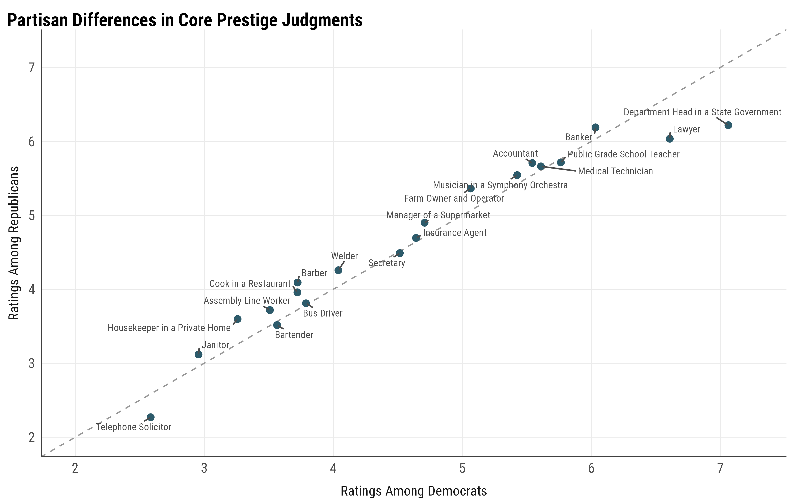
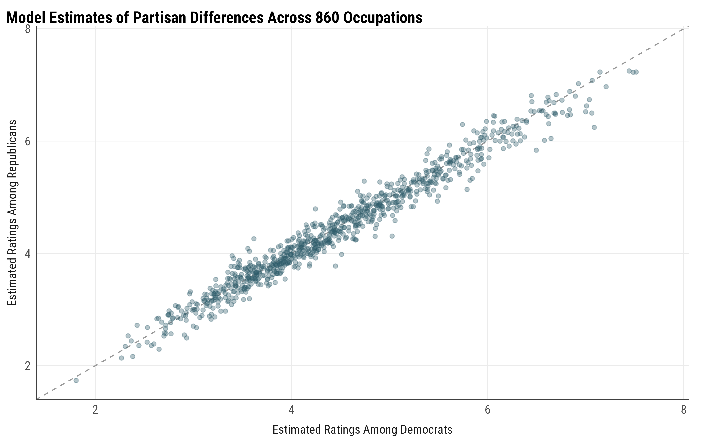
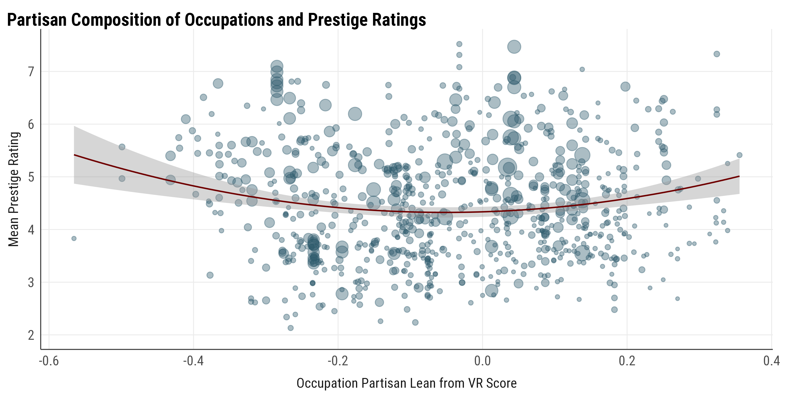

Partisan Penalty in Occupational Prestige Judgments
My favorite topic these days is occupations and politics.
The two seem to have a lot to do with each other. There is strong partisan sorting into occupations in the United States (Chinoy and Koenen 2024; Kagan, Frake, and Hurst 2025), some of which, at least, seem like fun to talk about for conservatives (Gross 2013). This is probably not just because people end up in these jobs by accident: people seem to prefer occupations that fit their politics (a working paper from yours truly), so perhaps it is not surprising that we end up with liberal professors, conservative cops, and moderate pundits.
Given how politically sorted occupations really are, we may expect occupational prestige to become politicized too: that Democrats and Republicans in the U.S. would no longer agree on who sits where on the hierarchy, and that an occupation’s politics would blemish its standing.1 That being said, occupational prestige (the perceived social standing of a job) is one of the most consensual things sociology has ever measured (see Treiman Constant Treiman 1977; but also see Lynn, Shi, and Kiley 2025; Lynn and Ellerbach 2017), so it might be that there is in fact no such disagreement between different ideological groups, and everyone agrees on everything.
1 There is a connection here to Bourdieu’s arguments for “autonomy,” the Dreyfus case, and Émile Zola’s J’Accuse…!, that can be fun to talk about: why do people respect what novelists say about the topics of the day?
Either way, this felt like a good research project, so I decided to ask if there is something like a partisan penalty in occupational prestige judgments in the United States.
The natural place to look for a partisan penalty is the General Social Survey occupational prestige module. In 2012, roughly 1,000 GSS respondents were handed a stack of cards with approximately 90 job titles and a board with boxes numbered 1 (“bottom”) to 9 (“top”), and asked to sort the occupations by their “social standing.” Since these occupations were drawn from a rotating set (so everyone rated 20 core occupations and 70 others drawn from hundreds of other occupations), we could observe prestige judgments for 860 distinct occupational titles from a representative sample of Americans.
This dataset is unfortunately not public, though there are several fantastic studies that use it (e.g., Valentino 2020) and the GSS staff was kind enough to let me have the data for this research project. After getting this data, I merged it with the 2012 GSS, and subsetted the data for self-identified Democrats and Republicans (including leaners) which yielded roughly 830 respondents.2
2 I can’t share the data, but you can find my code for analyzing it here.
Partisan Differences in Prestige Judgments?
Let me start with the 20 core occupations that almost everybody rated, as they provide the cleanest comparison. For each, I simply computed the weighted mean rating among Democrats and among Republicans.3
3 Of course, there may be differences among people in how they use the scale: some may give ratings that are squished; some may use the entire scale. I couldn’t find gross differences across partisans, so I am not post-processing them here.
Figure 1 below shows that Democrats and Republicans agree almost perfectly on the prestige hierarchy:
 |
|---|
| Figure 1 : Partisan Differences in Core Prestige Judgments |
You might say: well, 20 occupations is a small world.
We can do the same exercise using all 860 occupations, but there is a catch. Because the “non-core” occupations are each rated by less than 100 people, the raw party means would be pretty noisy, so we need to partial pool the estimates by pooling across individuals and occupations. Hence, I fit a simple multilevel model:
Rating ~ Party + (1 | Person) + (1 | Occupation) + (1 | Party:Occupation)with random intercepts for the rater, the occupation, and the occupation-by-party.4
4 There is no one who dislikes partial pooling more than me. But it is justified and probably required here.
This strategy partials out each individual’s scale use (good) and shrinks the occupation ratings toward the grand mean, then returns a model-implied prestige estimate for each occupation, separately by party.
Again, I plot Democrats against Republicans in Figure 2:
 |
|---|
| Figure 2 : Estimates of Partisan Differences in Prestige Judgments |
Same story, now with the full set of occupations.
What About Party Compositions?
Of course, a rating consensus such as this is perfectly compatible with every American jointly penalizing the occupations on one side or the other. We need an external measure of where occupations actually are politically to get at this possibility. The recent VRScores database gives me exactly that. VRScores estimate the partisan composition of a workforce by linking the L2 national voter file to employment information in Revelio Labs, with partisan composition of each occupation starting with 2012. This means that I can take each occupation’s two-party lean and ask whether it predicts that occupation’s prestige scores.
I did a crosswalk from GSS’s occupation titles to O*NET titles presented in the VRScore, using the Census mapping provided by the GSS methodology document. I was able to match 810 titles. In Figure 3, I plot almost all occupations’ mean ratings against their VRScore partisan scores. The x-axis here shows the partisan lean (+1 for fully Republican and -1 for fully Democratic) and point size is proportional to the occupation size.
 |
|---|
| Figure 3 : Partisan Composition of Occupations and Prestige Ratings |
There is nothing here! Occupations that lean heavily Democratic and occupations that lean heavily Republican are rated, on average, the same. The composition of an occupation carries no information about its standing.5
5 Of course, you can guess what a regression using a rater’s partisanship and party composition shows.
Treiman’s Constant for the Win
There can be many reasons why there is no partisan penalty in occupational prestige judgments:
- It may be that 2012 was actually too early for this to emerge and we need newer data (I hope that the GSS collects it sometime soon).
- It may be that there is a partisan penalty but it is too small and swamped by other things like earnings.
- It may be that people privately do think that some occupations are more or less prestigious due to the partisan congruence, but because this question asks about the social standing, the consensus is baked into the measure.
I think it’d be something interesting to try and find why there is no such penalty in prestige judgments. In any case, Treiman’s Constant, it turns out, is a constant across the partisan divide too.